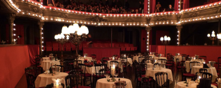
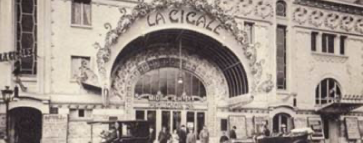

<section class="hist container">
    <article class="histo col-12 col-xl-12 ">
        <div class="enfant22">
            <h2> HISTOIRE DE LA SALLE </h2>
                
                
        </div>
            
        
        
        <div class="enfant11 col-xl-6">
            
            
            
            
            <h2>En <strong>1887</strong> à Pigalle, La Cigale entonne son premier chant face à 1000 spectateurs. </h2>
            
            <p> Par la suite, la salle s’agrandit en 1894 mais finit par fermer ses portes pendant 40 ans. Après cette période, l’effervescence des années 80 ressuscite la salle ! Jacques Renault et Fabrice Coat reprennent la salle. Philippe Starck transforme, modernise et fait sortir les murs de l’ombre. 
            </br>
            </br>
                La Cigale retrouve enfin ses couleurs : impertinence, rire et musique montent à nouveau sur scène.
                            
            </p>
            

            <div class="buttondiv22">
                {% include button.html button_text="Histoire de La Cigale" btn_type="blanc" %} <!--pour la couleur lors du hover, mettre soit noir, soit blanc-->
            </div>
            
            </div>
        </div>
        
    </article>
        
    
</section>